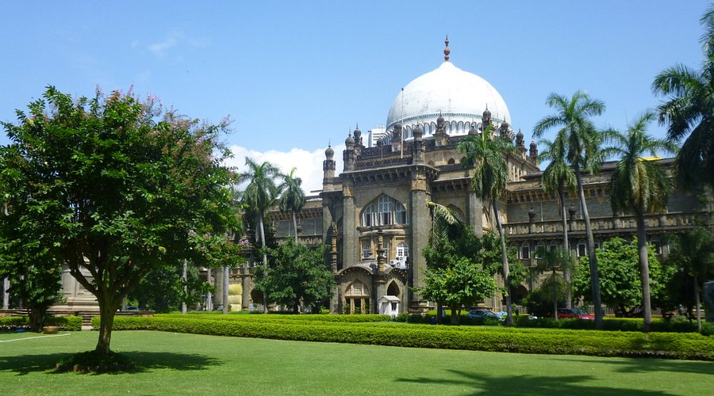

The The Jehangir Art Gallery is located in South Mumbai, Maharashtra, India, and is one of the most prominent art galleries in India. Established in 1952 by Sir Cowasji Jehangir, a prominent industrialist, the gallery is dedicated to promoting and showcasing Indian contemporary art. The gallery is a hub for both established and emerging artists, offering a platform for diverse artistic expressions.
Museum HighLights
Diverse Art Exhibitions: The gallery hosts solo exhibitions, group shows, and art events, showcasing contemporary paintings, sculptures, photography, and installations. Support for Emerging Artists: The gallery serves as a platform for emerging and established artists, promoting both traditional and modern art forms. Iconic Artworks: Displays of signature works by renowned Indian artists, offering visitors a chance to experience the rich cultural heritage of India. Artistic Diversity: The gallery showcases a wide range of artistic styles, from abstract and realistic to experimental and digital art. Cultural Hub: It regularly organizes workshops, talks, and art-related events, fostering a creative exchange of ideas.
visiting information
Location: 161, Kala Ghoda, Fort, Mumbai, Maharashtra, India. Timings: Open from 11:00 AM to 7:00 PM, closed on Mondays. Entry Fee: Entry is generally free, but some special exhibitions may charge an entry fee. Best Time to Visit: Weekdays are ideal to avoid crowds. The winter months (November to February) offer a pleasant experience. Facilities: The gallery provides free parking nearby, and there are several cafes and restaurants in the area. Additionally, it has a gift shop selling art-related products. Located in the cultural heart of Mumbai, the Jehangir Art Gallery is a must-visit for art lovers and anyone interested in exploring India's contemporary art scene.
Best Time to Visit
Best Time to Visit: Mornings and weekdays are ideal to explore the museum without heavy crowds.